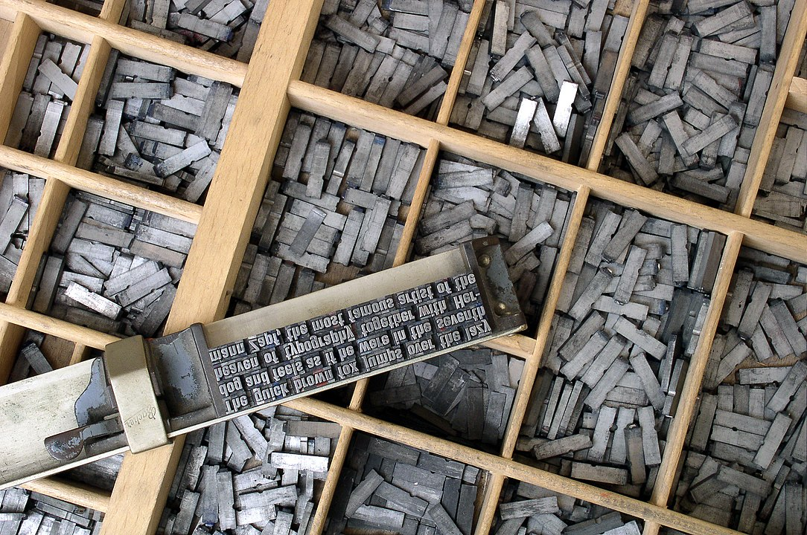
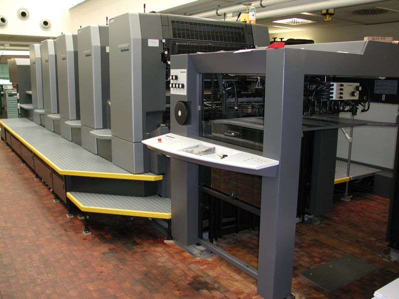
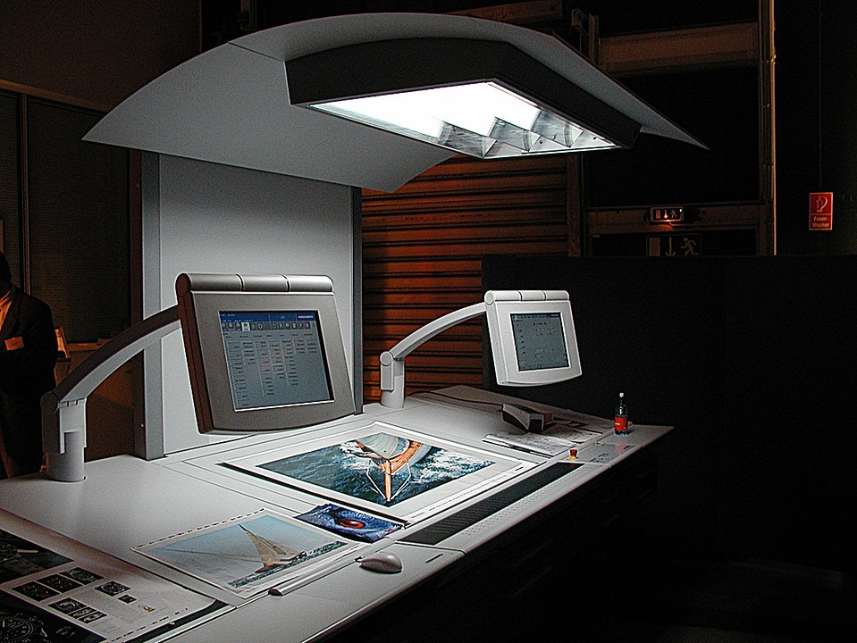

Johannes Gutenberg nevéhez fűződik a könyvnyomtatás elterjedése.

Alois Senefelder dolgozta ki a litográfia eljárását.

William Henry Fox Talbot jelentős szerepet játszott a fényképezés fejlődésében.

Digitális nyomtatási technológiák rövid bemutatása.